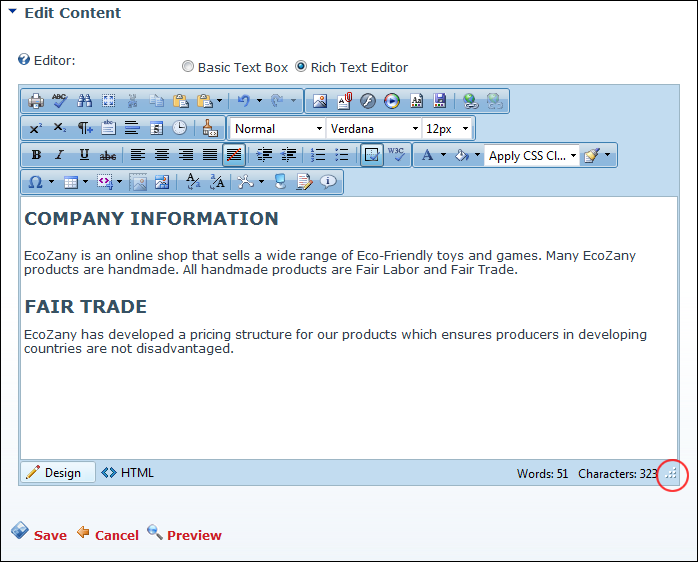

How to increase or decrease the size of the RadEditor.
Tip: An alternative option is to click the Toggle Full Screen Mode (F11) button to toggle Editor to/from full screen mode.
 Modifying Editor Size